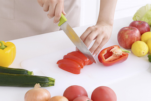
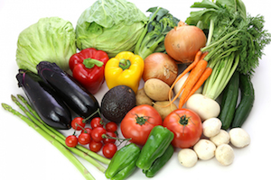
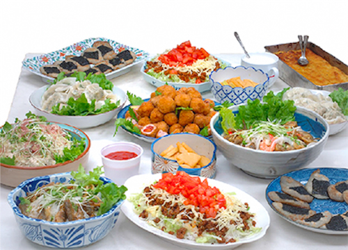
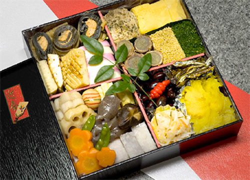
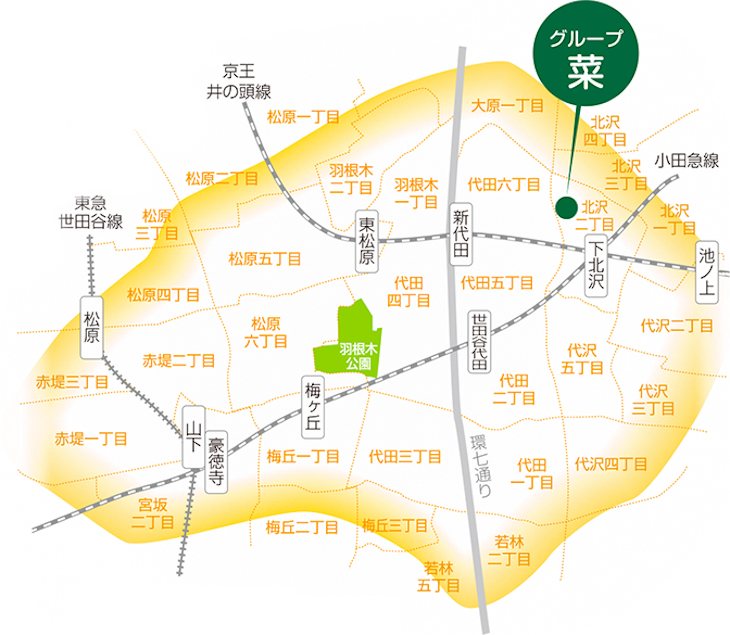

主婦のお料理お届けします
《菜》は、主婦が主催する夕食のおかず宅配グループです。
主婦の感覚を生かし、旬の野菜をたっぷり使った気取らない家庭料理を手作り。
世田谷区周辺にお届けしています。
ポイント1
安全・新鮮な食材で作りたて
安全性の高い食材を選び、買い置きせずに常に新鮮なものを使用しています。

ポイント2
野菜中心で栄養バランスもばっちり
多くの品目を取り入れ、バランスの良いメニュー作りをしています。

ポイント3
幅広い年齢層に対応したメニュー
家族みんなで美味しく食べられるよう、和洋中を適度に組み合わせています。
メニュー・料金
1人前のお届け例
2人前のお届け例
盛り付け例


ご注文方法・お問い合わせ
お電話、メール、FAXにて承ります。
※おせちはお申し込みフォームでも予約を受け付けております。（毎年11月頃から予約受付開始）
- 電話
- 代表：03-3468-0408
- 青木：080-6603-6574
- FAX
- 代表：03-3468-0408
- 木村：03-3325-6141
夕食のおかず
- 配送日は週2回（火曜・木曜）の夕方です。
- 月ぎめでお取りいただくのを基本としておりますが、不定期も承っております。詳しくはご相談ください。
- 容器は基本的に使い捨てです。ご家庭で不燃ゴミとしてお捨てください。
パーティー料理
- 人数・お料理の内容をご相談の上、ご注文ください。
おせち料理
- 限定数に達し次第締め切る場合もございます。お早めにお申し込みください。
- 12月30日夕方にお届けいたします。
- 全国配送が可能です。お問い合わせください。
配達可能エリア
北沢、大原、代田、羽根木、松原、梅ヶ丘、赤堤など。詳しくはお問い合わせください。

ご利用者の声
《グループ菜》とのお付き合いは、羽根木公園を囲む地域のお母さんたちが「子どもがお世話になっている学校の先生方に夕食のおかずを届け、少しでもお役に立てれば」ということで始められ、「教師ではないけど、毎日、目一杯フル回転で動いている私にも作って！」とお願いしたのが、始まりです。
「1日30種類以上の食材で、できるだけ薄味」を目標にしていた我が家には、《菜》の献立は願ったり叶ったりでした。
週2回、大急ぎで帰宅しなくて済むのは、精神的にも物理的にもありがたく、この地域から遠くへ引越すことができないのも、《菜》が生活に欠かせないものになっているからです。
大汗をかきながら心を込めて作ってくださるスタッフには、いつも感謝しています。
家族3人 50代 [菜歴10年以上]
《菜》の日は献立を考える必要がないのでホッとできる日です。友達とのお出かけは《菜》の日と決めています。いつも一人分を主人と仲良く分けていただいています。
夫婦2人暮らし 60代 [菜歴4年]
一人暮らしの母は、80歳を過ぎる頃から出来合いのフライや一品料理になりがちで、栄養的に不安だったのですが、おかげさまでたまに風邪をひくくらいで元気に過ごしています。（娘談）
一人暮らし 80代 [菜歴8年]